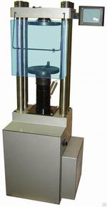

Испытательная машина (пресс) ИП-1А-1000АБ
Предназначена для изготовления образцов путем уплотнения асфальтобетонных смесей по ГОСТ 12801 в формах диаметром 50,5мм, 71,4мм и 101,0мм, а также для испытания строительных материалов по ГОСТ 8462, ГОСТ 6996 (испытание сварного соединения на статический изгиб (загиб), ГОСТ 14019, ГОСТ 10180 или других видов материалов по методикам, указанным заказчиком в рамках своих технических возможностей.